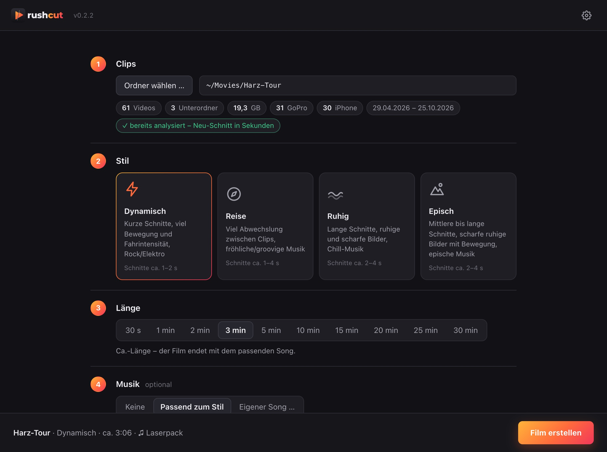
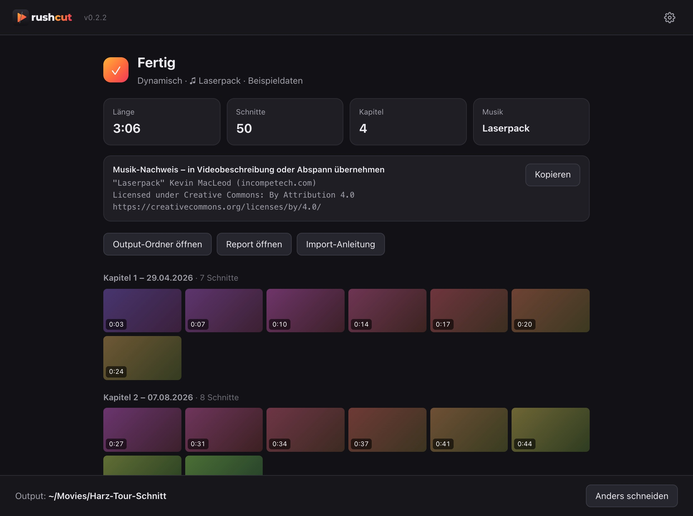

Aus Rohmaterial wird ein Schnittvorschlag – lokal, in Minuten.
GoPro- und Handy-Clips rein, fertige Timeline für DaVinci Resolve, Filmora und EDIUS raus. Kein fertiges Video wie bei Quik, sondern ein Rohschnitt, den du im eigenen Schnittprogramm weiterbearbeitest.
macOS 14+ & Windows 10/11 · keine Uploads · kein Konto · alles in einem Paket

Was Rushcut macht
Abende im Schnittprogramm sichten? Nicht mehr.
Rushcut schaut sich das ganze Material an, sucht die besten Szenen und legt sie auf den Beat – Originale bleiben unangetastet, das Ergebnis ist eine Timeline zum Weiterschneiden.
Clips einlesen
Ein Ordner samt Unterordnern – GoPro, iPhone, Android. Die Originale werden nie verändert.
Szenen bewerten
Bewegung, Schärfe, Belichtung, Verwacklung und Ton – jede Szene bekommt eine Note.
GoPro-Sensordaten nutzen
Fahrintensität, GPS-Tempo, HiLight-Marker, Gesichtserkennung (Selfies fliegen raus); kopfüber montierte Kameras werden gedreht.
Auf den Beat schneiden
Kapitel nach Aufnahmetagen, Schnittlänge je nach Stil und Bewegung.
Musik optional
30 lizenzfreie Songs eingebaut, dazu eigener Song oder eigener Musikordner.
Timeline ausgeben
FCP7-XML und EDL mit verlinkten Originalclips, Musik, Kapitel-Markern und einem Report.
So geht’s
In fünf Schritten zum Film
Ein Fenster, fünf Entscheidungen. Ist der Film fertig, gibt es einen kurzen Ping.
- 1
Clips
Ordner wählen oder ins Fenster ziehen – Unterordner werden mitgelesen.
- 2
Stil
Dynamisch, Reise, Ruhig oder Episch – bestimmt Schnittlänge, Bildauswahl und Musik.
- 3
Länge
30 Sekunden bis 30 Minuten. Mit Musik endet der Film mit dem Song.
- 4
Musik
Keine, passend zum Stil oder eigener Song. Mit ▶ reinhören, „Anderer Song“ blättert weiter.
- 5
Output
Zielordner wählen – alles für die Weiterarbeit liegt an einem Ort.
Das Ergebnis
Eine Timeline, kein fertiges Video
Im Output-Ordner liegen die Timeline als XML und EDL, die verwendeten Songs, ein Report und eine Anleitung für den Import. Die Clips sind verlinkt – du schneidest mit den Originalen weiter.
V1VideoA1Originalton, abgesenkt und mit V1 verknüpftA2Musik◆ein Marker je Kapitel

| Programm | Import | Status |
|---|---|---|
| DaVinci Resolve | Datei → Importieren → Timeline → <Film>.xml | ✓ getestet |
| Filmora | Datei → Medien importieren → Timeline-XML importieren | ✓ getestet |
| EDIUS 11 Pro | Projekt mit der Voreinstellung aus LIESMICH.txt, dann Datei → Projekt importieren → FCP XML | ✓ getestet |
Download
Laden, installieren, loslegen
Beide Pakete bringen alles mit – Python, ffmpeg und Musik. Es muss nichts weiter installiert werden.
macOS
macOS 14 oder neuer, Apple Silicon
Rushcut.dmg ladenApp nach „Programme“ ziehen. Noch nicht signiert: beim ersten Start Rechtsklick → „Öffnen“.
Windows
Windows 10 oder 11, x64
Rushcut-Setup.exe ladenInstalliert ohne Admin-Rechte. SmartScreen: „Weitere Informationen“ → „Trotzdem ausführen“.
Fragen
Gut zu wissen
Werden meine Videos irgendwo hochgeladen?
Nein. Rushcut läuft komplett auf deinem Rechner – keine Uploads, kein Konto, kein Tracking. Die Originalclips werden nur gelesen, nie verändert.
Worin unterscheidet sich Rushcut von GoPro Quik?
Quik liefert ein fertiges Video und braucht App und Cloud. Rushcut liefert einen Schnittvorschlag als Timeline, den du in DaVinci Resolve, Filmora oder EDIUS frei weiterbearbeitest – mit den Originalclips in voller Qualität.
Welche Kameras werden unterstützt?
Alles, was gängige Videodateien schreibt – GoPro, iPhone, Android und andere. Bei GoPro-Kameras mit Sensordaten (GPMF) nutzt Rushcut zusätzlich Tempo, Fahrintensität, HiLight-Marker und Ausrichtung.
Darf ich die eingebaute Musik auf YouTube verwenden?
Ja. Die Songs stammen von Kevin MacLeod (incompetech.com) und stehen unter CC BY 4.0 – auch bei monetarisierten Videos. Den Musik-Nachweis legt Rushcut in den Output-Ordner; er gehört in die Videobeschreibung oder den Abspann.
Wie lange dauert ein Schnitt?
Die erste Analyse dauert einige Minuten (bei rund 20 GB Material etwa 3 Minuten). Danach ist ein neuer Schnitt mit anderem Stil, anderer Länge oder Musik in rund einer Sekunde fertig.
In welchen Sprachen gibt es Rushcut?
Deutsch und Englisch – nach Systemsprache, umschaltbar in den Einstellungen. Das gilt auch für Report, Anleitung und Ordnernamen im Output.